Script setup and usage ¶
The migration material is located within the firmware package , under
STM32Cube_SW_Package_{release_version}.x.y\stm32tnxx_drivers\migration_tools
.
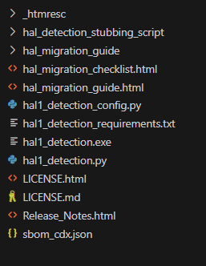
1. Execution requirements ¶
Important
Before running the migration script, ensure that the entry point for HAL includes stm32_hal.h. Refer to breaking_concepts_concept_L for more details . Additionally, if your HAL1-based application utilizes LL (Low Layer) drivers, it is mandatory to verify that the corresponding LL file exists within HAL2.
1.1 Python Format ¶
When using the Python script format, it is essential to install the dependencies
specified in the
hal1_detection_requirements.txt
file.
You can install all the required dependencies using the following command:
pip install -r hal1_detection_requirements.txt
Note
The actual script is developed and tested using Python version 3.8.0.
1.2 Executable Format ¶
When using the executable format, there are no package dependencies.
The
hal1_detection.exe
is ready-to-use .
Note
The actual version is compatible with Windows 11 64-bit operating system.
It’s recommended to use python format when you do not have windows 11 .
1.3 Commands description ¶
|
Option |
Shortcut |
Type |
Value |
|---|---|---|---|
|
|
|
Optional |
Displays information about the usage of the migration tool and its available options. |
|
|
|
Optional |
Config management:
|
|
|
|
Optional |
Detection mode:
if omitted
|
|
|
|
Mandatory |
Directory/file location of HAL1 based project. |
|
|
|
Mandatory |
ppp (e.g ,
|
2. Script configuration ¶
This section details the available option for script configuration [ list| modify | default ] .
If
-c
option is used without an option, an interactive menu is shown .
For clarity, the examples presented in this section utilize the executable file , however identical behavior is obtained when using the
Python
version of the script.
The accompanying screenshots are taken from the Bash interface.
2.1 List configuration ¶
|
Description |
Example |
|---|---|
|
To displays the current configuration settings, including all stubbing and warning message options. One of the following commands can be used: # Using the Python script
# Compatible with bash and Windows console
python hal1_detection.py -c list
# Using the executable on bash
./hal1_detection.exe -c list
# Using the executable on Windows console
hal1_detection.exe -c list
You can also obtain the same result using the interactive menu as follow # Run the command with no option then type `1` to the prompt.
hal1_detection.exe -c
|
List current configuration 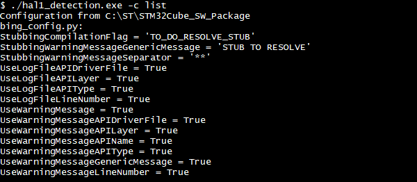 List current configuration using interactive menu 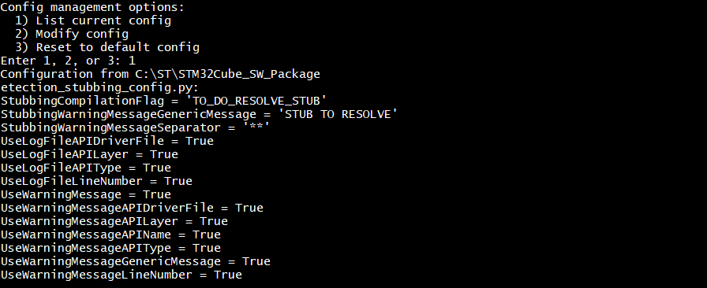 |


2.2 Modify configuration ¶
|
Description |
Example |
|---|---|
|
One of the following commands can be used: # Using the Python script
# Compatible with bash and Windows console
python hal1_detection.py -c modify
# Using the executable on bash
./hal1_detection.exe -c modify
# Using the executable on Windows console
hal1_detection.exe -c modify
Select the number corresponding to the variable you wish to modify. Enter the new value, and save your selection. The following example illustrates the process using the interactive menu
to modify the value of
# 1 - Run the command with no option then type `2` to the prompt.
hal1_detection.exe -c
# 2 - Type `7` to the prompt to select ``UseLogFileLineNumber``.
# 3 - Enter a new value for the selected field (``False``).
# 4 - Save and exit.
|
Modify configuration 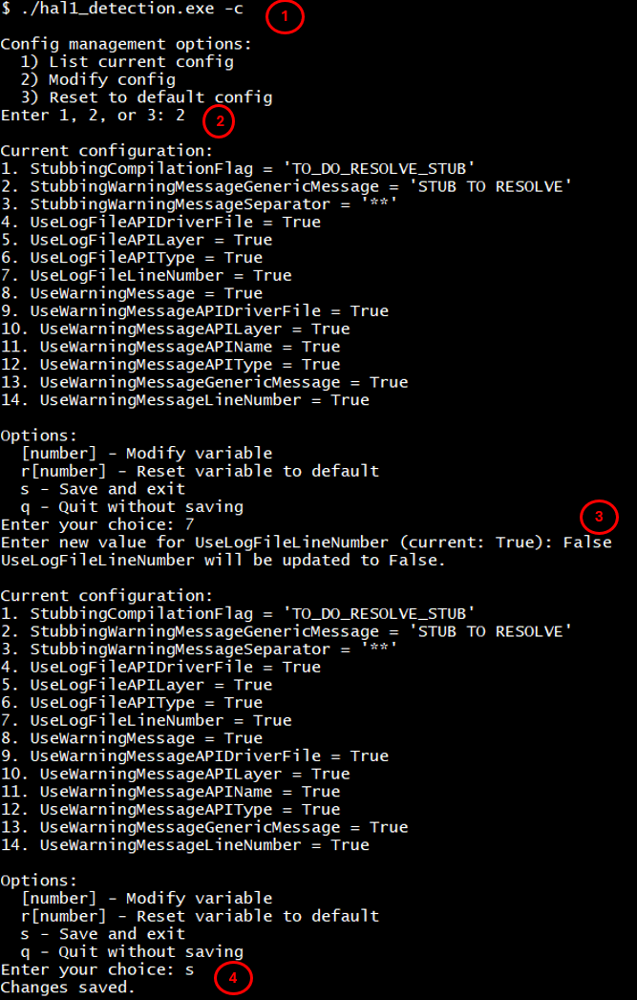 |

2.3 Reset configuration ¶
|
Description |
Example |
|---|---|
|
One of the following commands can be used: # Using the Python script
# Compatible with bash and Windows console
python hal1_detection.py -c default
# Using the executable on bash
./hal1_detection.exe -c default
# Using the executable on Windows console
hal1_detection.exe -c default
You can also obtain the same result using the interactive menu as follow # Run the command with no option then type `3` to the prompt .
hal1_detection.exe -c
|
Reset configuration Reset configuration using interactive menu 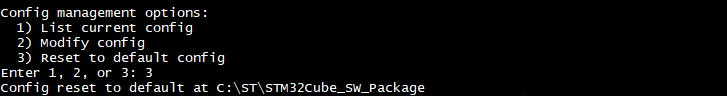 |


2.4 Log file message configuration ¶
Users have the flexibility to tailor the messages recorded in the log file according to their individual requirements.
This customization can be accomplished by either editing the
hal1_detection_config.py
configuration file directly,
or by modifying the value of the
UserLogFile_xxxx
field through the interactive menu, as previously described.
The table below provides a summary of the available configuration options:
|
Field |
Default value |
Possible Configuration |
|---|---|---|
|
UseLogFileLineNumber |
True |
True / False |
|
UseLogFileAPIType |
True |
True / False |
|
UseLogFileAPILayer |
True |
True / False |
|
UseLogFileAPIDriverFile |
True |
True / False |
|
Description |
Example |
|---|---|
|
The following example demonstrates a custom configuration where the user chooses to set the fields
to
# 1 - Edit the configuration as shown.
# 2 - Save and exit.
# 3 - Run the detection script.
# 4 - Observe the updates in the generated log file.
|
Edit the
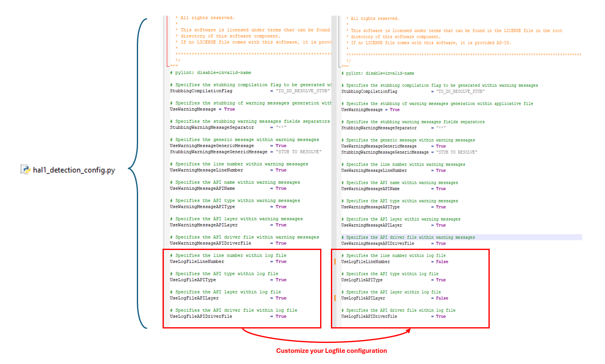 Impact on generated log file 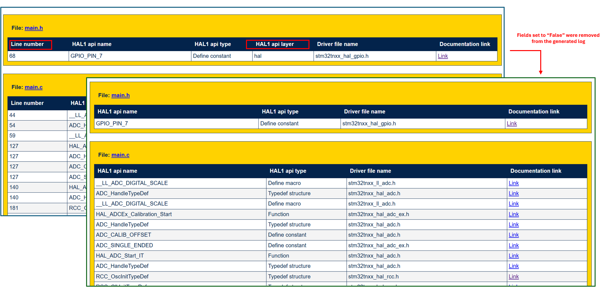 |


3. Script usage and examples ¶
3.1 Script usage ¶
|
Item |
Description |
|---|---|
|
Purpose |
Detect HAL1 APIs and generate a log file (no source modifications). |
|
Syntax |
One of the following commands can be used.
|
|
Required Arguments |
|
|
Examples |
|---|
# On windows console
# Detect all HAL1 APIs in src (dry-run, no file modifications)
hal1_detection.exe -psrc .\src -m all
# On bash env use
./hal1_detection.exe -psrc ./src -m all
|
# On windows console
# Detect (dry-run) specific HAL1 APIs in a single file
hal1_detection.exe -psrc .\src\main.c -m spi i2c
# On bash env use
hal1_detection.exe -psrc ./src/main.c -m spi i2c
|
3.2 Log file usage ¶
The log file produced by the HAL1 detection script is generated in HTML format and includes excerpts of the user application code where HAL1 APIs have been identified. Each occurrence of a HAL1 API within the log is presented as a clickable hyperlink, which directs users to the relevant section of the HAL1 to HAL2 migration documentation. This functionality facilitates rapid navigation and provides efficient access to comprehensive migration guidance for each detected HAL1 API.
|
Examples |
|---|
|
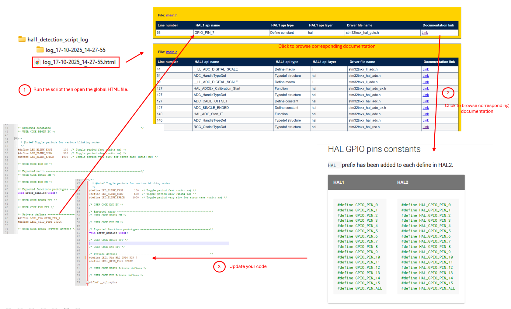 |

Additionally, the script generates a specific HTML file for each processed file, which is saved under
the user’s working folder at
hal1_detection_script_log/log_{date}_{time}
These files can be utilized to assist with migration.
|
Examples |
|---|
|
once the script is run 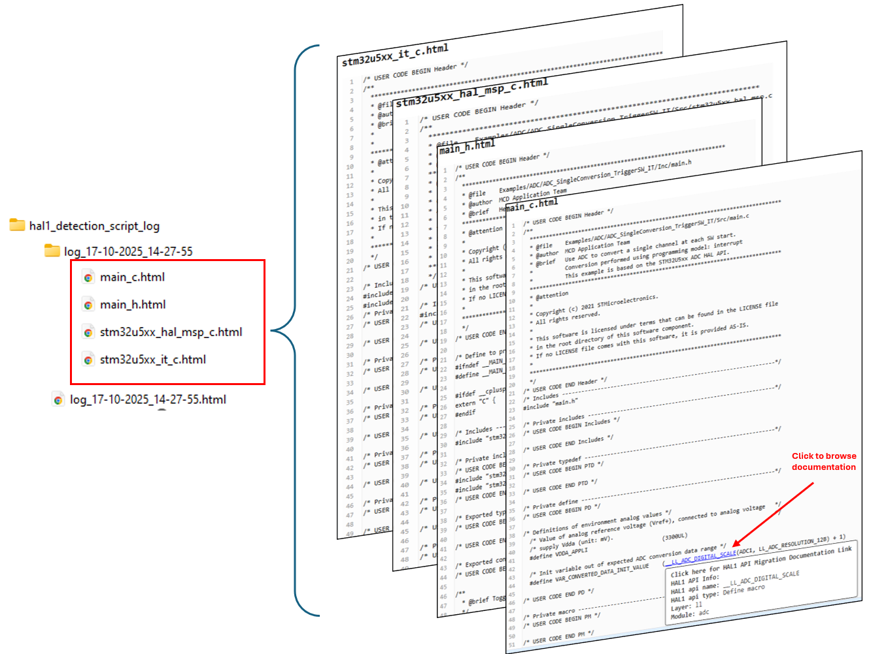 |
|
To migrate detected APIs under
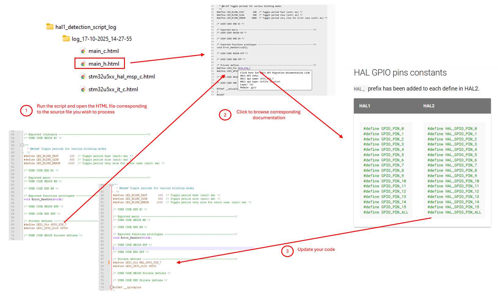 |


Note
You can navigate from the global log file directly to the corresponding application source code file by clicking on the file name
|
Examples |
|---|
|
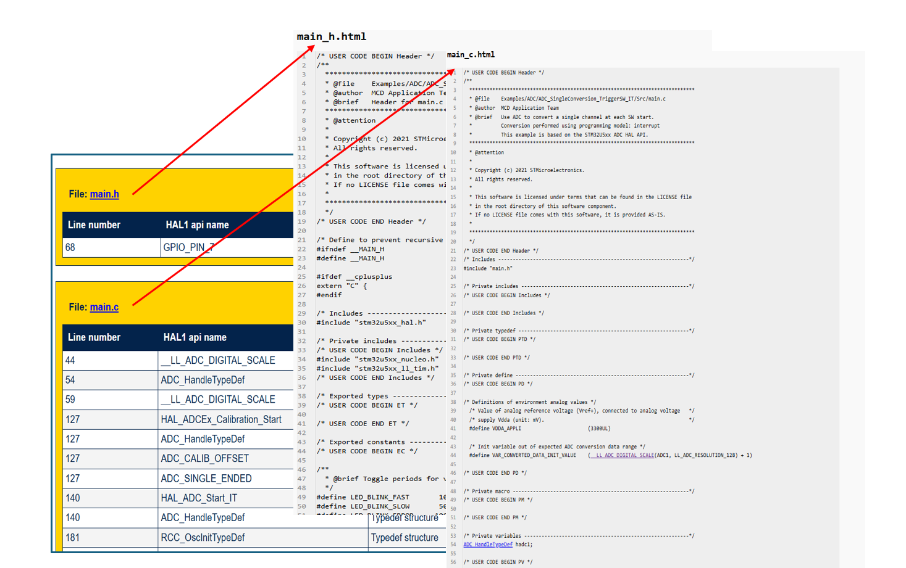 |